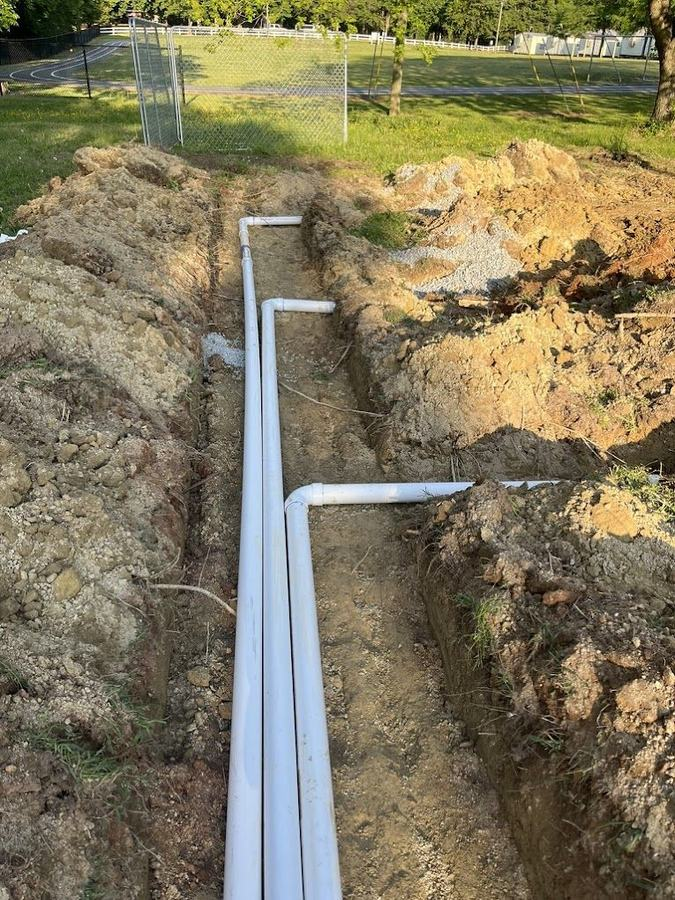

Monroe's Local Septic Repair Contractor
Redline Site Services is based in Monroe, NC at 7322 Pleasant Hill Church Road — which means Monroe is our home market, not a long-distance service call. We know Monroe's neighborhoods, the soil conditions throughout Union County, and the permit process at the Union County Environmental Health office. When you call Redline for Monroe septic repair, you're calling a local crew.
Monroe has a large stock of homes built in the 1980s and 1990s. Many of these properties — particularly in the residential neighborhoods surrounding the city center — still have private septic systems that are now 25–40 years old. These systems are entering the age range where components fail regularly and repair or replacement decisions need to be made.
Septic Repair Problems We Handle in Monroe
Sewage backups
Wastewater backing into tubs, toilets, or floor drains is never just a slow drain. We diagnose the actual cause — full tank, broken line, baffle, or drain field — before recommending anything.
Broken inlet and outlet lines
Cracked or collapsed septic lines are among the most common repairs on Monroe's older residential systems. Root intrusion, soil movement, and age cause progressive damage that worsens without repair.
Baffle deterioration
Monroe homes with 1980s and 1990s systems frequently have original concrete baffles now well past their design life. A failed outlet baffle pushes solids into the drain field.
Drain field problems
Wet areas in the yard, odors near the drain field, or slow system-wide drainage often indicate the drain field is saturated or failing. We diagnose before recommending repair or replacement.
Pump and alarm issues
Homes with aerobic or pump-equipped systems have an active alarm component. Alarm triggers, continuous pump cycling, or a silent pump each point to specific failure types we diagnose and fix.
Real estate repair items
Monroe's active real estate market means we regularly help buyers, sellers, and agents address septic repair findings from home purchase inspections under closing deadlines.
Common Septic Issues in Monroe Homes
Based on the repair calls we see regularly in Monroe, the most common failure patterns on the city's older residential systems are:
- Concrete baffle failure — original concrete inlet and outlet baffles in 1980s and 1990s systems are now at or past the end of their service life. Failed outlet baffles are the most consequential because they allow solids to enter the drain field.
- Root intrusion in established neighborhoods — Monroe's older residential areas have mature tree canopies with extensive root systems that work into pipe joints over decades. This is particularly common with original clay tile connections and early-generation PVC fittings.
- Tank infiltration — older concrete tanks develop hairline cracks that allow groundwater to enter the tank (infiltration), raising tank levels artificially and sending partially diluted effluent to the drain field more frequently than the field was designed to handle.
- Drain field compression — years of vehicle traffic, landscaping, or simply soil compaction reduce percolation rates in original drain field laterals, causing the system to drain slower until it eventually backs up.
Monroe homeowners: If your system is more than 20 years old and you haven't had it inspected recently, a proactive inspection is the single best way to avoid an emergency. Redline can inspect, identify what's approaching failure, and give you time to plan. Call (704) 562-9922.
Septic Tank Repair vs. Full System Repair
Septic tank repair covers work on the tank itself — baffles, risers, lids, inlet and outlet connections, and any structural cracking. Septic system repair is broader: it includes the inlet line from the house, the outlet line to the distribution box, the distribution box itself, and the connections to the drain field.
Many Monroe homeowners use the terms interchangeably, which is fine — when you call Redline, we look at the whole system, not just the tank. The cause of a backup is often somewhere other than where the symptom appears, and the only way to know is to inspect the full system before recommending a repair.
Emergency Septic Repair in Monroe
For active sewage backups, effluent surfacing in the yard, or pump alarms — call us directly at (704) 562-9922. Redline answers emergency calls 24 hours a day, 7 days a week, with no after-hours surcharge. As a Monroe-based company, we can reach most Monroe addresses quickly.
Frequently Asked Questions
Is Redline based in Monroe, NC?
Yes. Redline Site Services is based at 7322 Pleasant Hill Church Road in Monroe, NC. We're a local crew, not a franchise or out-of-town contractor. Monroe and Union County are our primary service area.
What septic problems are most common in Monroe homes?
Monroe's 1980s and 1990s housing stock means many systems are now 25–40 years old. The most common repairs we handle are concrete baffle deterioration, root intrusion in established neighborhoods, tank cracking and infiltration, and drain field compression. All of these become more likely as systems age past 20 years without regular inspection and pumping.
My Monroe home has a sewage backup — what should I do?
Stop adding water to the system if possible — reduce or stop flushing and running water. Call Redline at (704) 562-9922. If sewage is actively surfacing outside, stay clear of the area. We answer emergency calls 24/7 and are based locally for fast response.
How much does septic repair cost in Monroe?
Repair costs depend on what failed. Baffle replacement is often one of the more affordable repairs. Broken line repair varies by depth and pipe length. Distribution box repair or replacement is moderate cost. Drain field involvement is the most expensive scenario. Redline gives free estimates after inspecting the system.
Do I need a permit for septic repair in Monroe?
Minor repairs — baffle replacement, riser installation, lid repair — typically don't require a Union County Environmental Health permit. Significant work like tank replacement, drain field expansion, or new system installation requires a permit. Redline is NC-licensed (#9788) and handles all permitted work.
Can Redline handle septic repair before my Monroe home sale closes?
Yes. We regularly handle time-sensitive repair work for real estate transactions throughout Monroe and Union County. We're familiar with due diligence periods and can usually prioritize scheduling when there's a closing deadline involved.
More About Septic Services in Monroe
Redline handles all septic services for Monroe properties beyond repair. See our Monroe septic services page for information on pumping, inspections, installation, and maintenance, or the septic repair service page for a complete breakdown of repair types. Nearby repair pages: Indian Trail · Wesley Chapel · Mint Hill